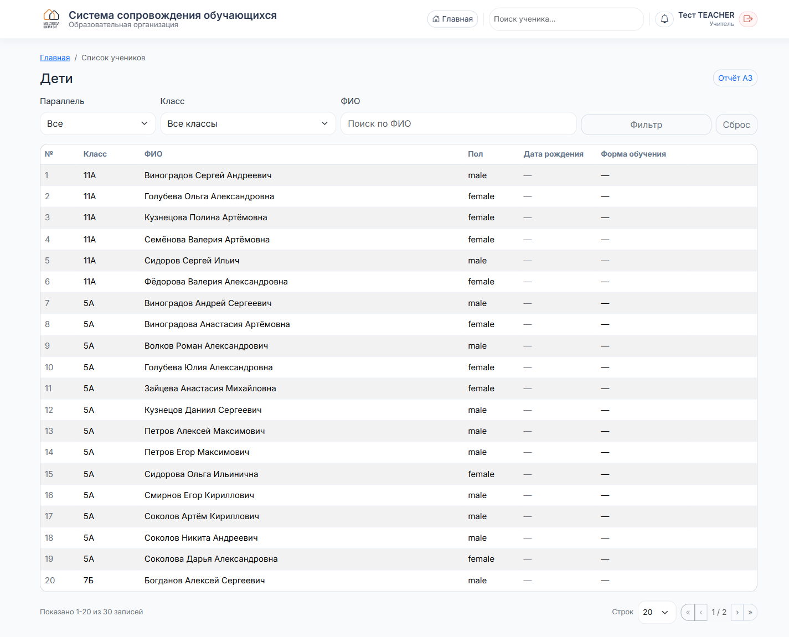

Учитель
Работа с учениками
Как найти ученика и что вам видно.
1
Поиск ученика
Два способа:
- На главной — большое поле «Поиск ученика по ФИО, части ФИО или классу». Введите фамилию или номер класса и нажмите «Найти».
- В шапке — маленькое поле «Поиск ученика…» доступно с любой страницы.
2
Список учеников
Откроется таблица. Сверху — фильтры: параллель, класс, ФИО. Нажмите «Фильтр», чтобы применить, или «Сброс», чтобы очистить.

3
Что доступно учителю
- Видеть список учеников: класс, ФИО, пол, дата рождения, форма обучения.
- Подавать инциденты по любому ученику школы.
- Оформлять пропуска.
Открыть личную карточку ученика (история, оценки, документы, соц. паспорт) учителю нельзя — это уровень классного руководителя и службы сопровождения. Если нужны данные по ребёнку — обратитесь к его классруку.
4
Если нужно больше
Всё, что выходит за рамки подачи инцидента — через классного руководителя, социального педагога или администрацию.